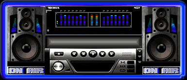

Play Music
Pause Music
Harry Music

DeStorm - King Kong
In the End - Tommee Profitt
JAEGER - Until Dawn
Jetta - The world
Legends Never Die ft Current
Lost Sky - Fearless pt.II
The Script - Hall of Fame
Unknown Brain - Superhero